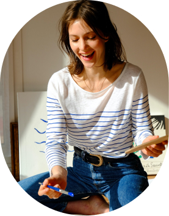

"Art my cherished pastime, a timeless affair where passion dances
with the strokes of nostalgia,creating masterpieces that wisper stories of a bygone era."
About Me

Greetings, I'm Maya, a seeker of beauty and meaning in the world of art.
From my earliest memories, I've been enchanted by the world of colors and forms.
Growing up in Mexico, I was surrounded by the picturesque landscapes of Beauty and dreamy scenes,
which instilled in me a deep appreciation for nature's beauty.
Painting became not just a hobby, but a way for me to capture the essence of the world around me and convey the emotions within.
It's a journey of self-discovery and a constant quest to translate the intangible into the tangible.
With every brushstroke, I rediscover a piece of myself.
In essence, I am driven to paint by a profound love for the world around me, a desire to capture its beauty,
and an unquenchable thirst for self-expression through the medium of art. Through my paintings,
I hope to share a piece of my world and touch the hearts of those who view them.
Artwork showcase
Insights of my Artistic process
1. Inspiration
Every painting begins with an idea or a spark of inspiration.
It might be a vivid dream, a fleeting moment in nature, or an intense emotion.
I keep a sketchbook handy to jot down these moments of inspiration,
which often serve as the foundation for my artwork.
2. Conceptualization
Once I have a clear idea, I begin sketching rough outlines and visualizing the composition.
This stage is all about finding the right balance, deciding on the color palette,
and mapping out the key elements.
3 Gathering Materials
Next, I gather the necessary art supplies, which include: